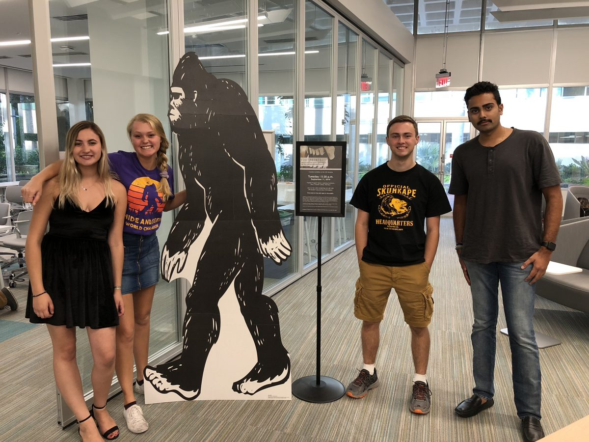

Pictured in the photo are Production Assistant Maddi Brown, Executive Producer Erika Orstad, Associate Producer Ben Ezzy, and Production Assistant Sagar Sharma.
Absent from the photo are Executive Producer Rebekah Chung, Production Assistant Robyn Shapiro, Production Assistant Andrew Blechman, and Production Assistant Cory Nigrin.